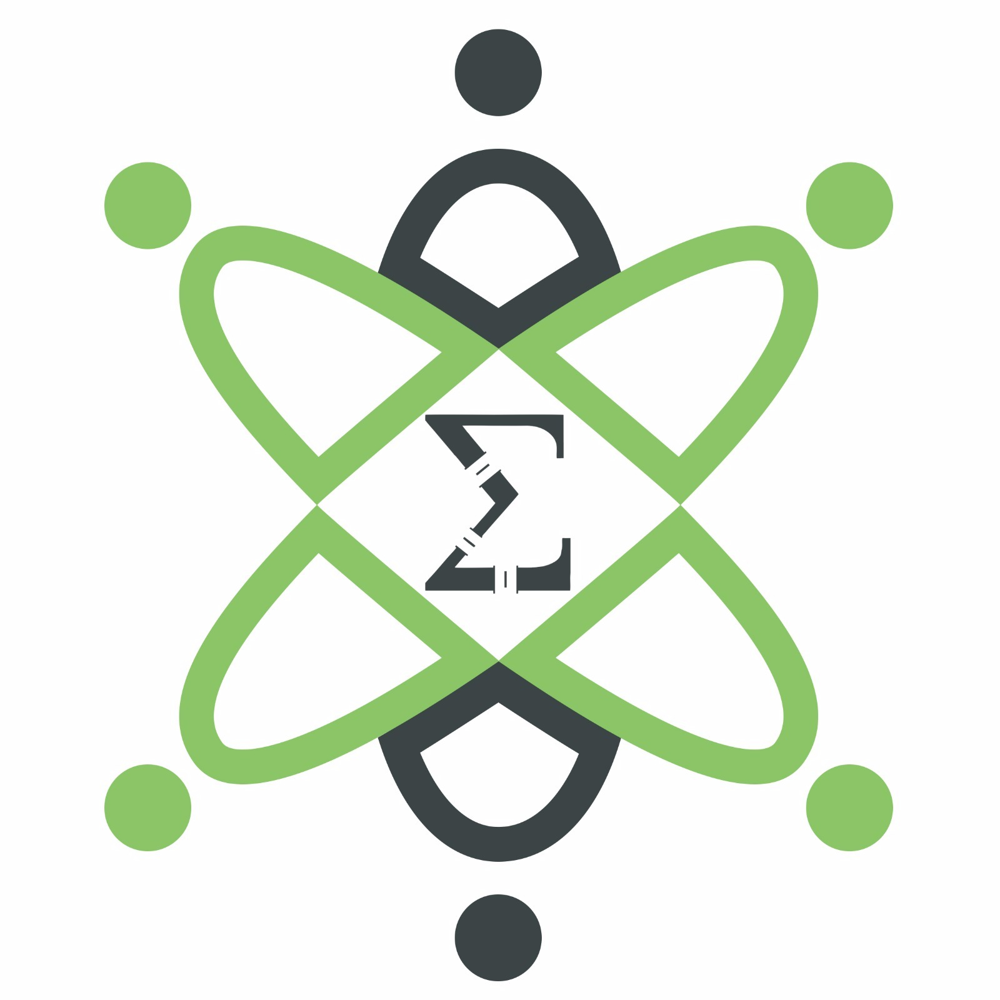
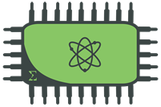
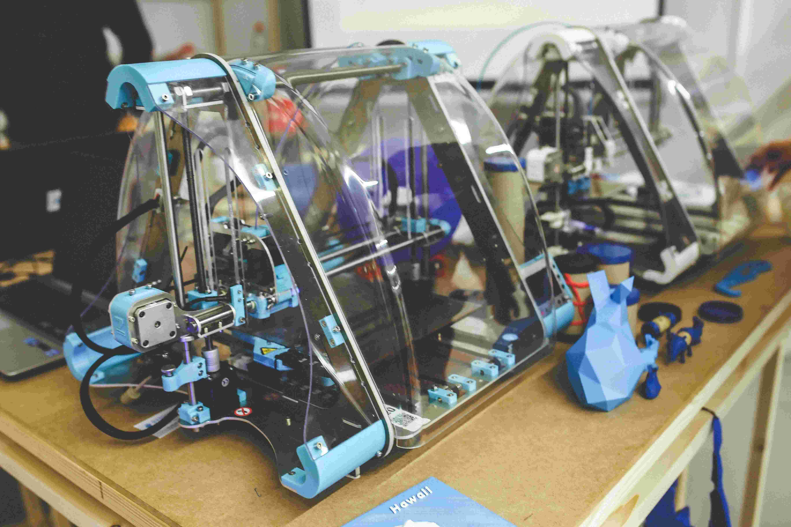

A Eletronjun procura sempre se envolver em projetos de engenharia, que possibilitem aos membros não somente adquirir conhecimento, mas também se preparar para o mercado de trabalho, colocando na prática o que é aprendido em um curso de engenharia.
Conheça um pouco mais dos nossos projetos abaixo.
EletronLab

A ideia do EletronLab nasceu com o intuito de criar um ambiente colaborativo de desenvolvimento de projetos e prototipagem em que acadêmicos, empresários e a sociedade em geral tenham possibilidade de acessar tecnologias específicas para a elaboração de trabalhos de alta qualidade em prototipagem e desenvolvimento de produto.
O EletronLab será o espaço ideal para a inovação, promovendo a nova revolução industrial, movimento maker que vem conseguindo cada vez mais adeptos no mundo todo.
Além de carregar conceitualmente a noção de compartilhar conhecimentos teórico e prático com os demais usuários do laboratório, será responsável por unir em um ambiente colaborativo pessoas que respiram os mesmos ideais e que juntas podem fundar novas startups no Gama. Além disso, será um polo de investimento das empresas de tecnologia que serão atraídas não apenas pelos cursos de engenharia, mas também pela existência do laboratório e pelo domínio que os frequentadores já possuem na área de gerenciamento de projetos.
Kit Didática

Com a crescente demanda por parte de estudantes e professores do campus FGA da Universidade de Brasília pelo laboratório de eletrônica, NEI, foi sugerida a transferência da matéria de Sistemas Digitais 1, alocada no laboratório NEI, para o laboratório de computação, SS. Esta medida visa diminuir o contingente de classes ministradas no NEI, acarretando em uma melhor alocação de disciplinas no laboratório.
Uma das sugestões para a realocação da matéria de Sistemas Digitais 1 foi a implementação de uma placa didática para a matéria, a qual deveria conter todos os periféricos necessários para que a disciplina pudesse ser ministrada fora de uma bancada de eletrônica. Dessa forma, a mesma deveria conter equipamentos fundamentais para a realização de experimentos propostos pela disciplina e deve ser didática, ao ponto de conseguir ser manuseada por estudantes que estão iniciando os estudos de circuitos digitais e que também não possuem experiência no uso de equipamentos de bancada.
Estação solar de carregadores
A projeto surgiu como uma parceria com a empresa júnior de engenharia de energia, Matriz. Propõe-se a construção de uma estação sustentável de carregadores celulares utilizando a energia solar na FGA. A estação será instalada em uma área verde de convivência, fornecendo assim um ambiente aconchegante para descanso e lazer enquanto carregamos nosso celular.
Com esse projeto esperamos abrir uma porta para estreitar laços entre as empresas júniores da FGA e promover a união de esforços e conhecimento das engenharias em soluções que beneficiem nosso ambiente acadêmico e comunidade.
Vídeo-Aulas
O projeto de vídeo-aulas surge como complemento à criação do canal EletronJun, onde serão expostos vídeos didáticos e entrevistas com figuras importantes dentro do curso de eletrônica da FGA e especialistas em demais áreas de tecnologia e eletrônica.
Assim, as vídeo-aulas propõem disseminar conhecimento prático e teórico em eletrônica de forma a permitir que leigos na área possam realizar sem dificuldades as atividades propostas e construir um conhecimento sólido sobre eletrônica. Futuramente, as vídeo-aulas servirão como complemento para aulas presenciais ministradas pela EletronJun.
Impressora 3D

A EletronJun conta com uma impressora 3D, modelo Mendel Prusa, com ela fornecemos a facilidade de imprimir projetos e adquirir acessórios personalizados tanto a clientes internos e externos à nossa comunidade acadêmica. Atualmente, nossa equipe está trabalhando na manutenção do nosso equipamento para melhorar nossa qualidade de impressão. Em breve, disponibilizaremos um catálogo de peças com acessórios personalizados e um espaço para enviarem seus projetos para fazer orçamento.